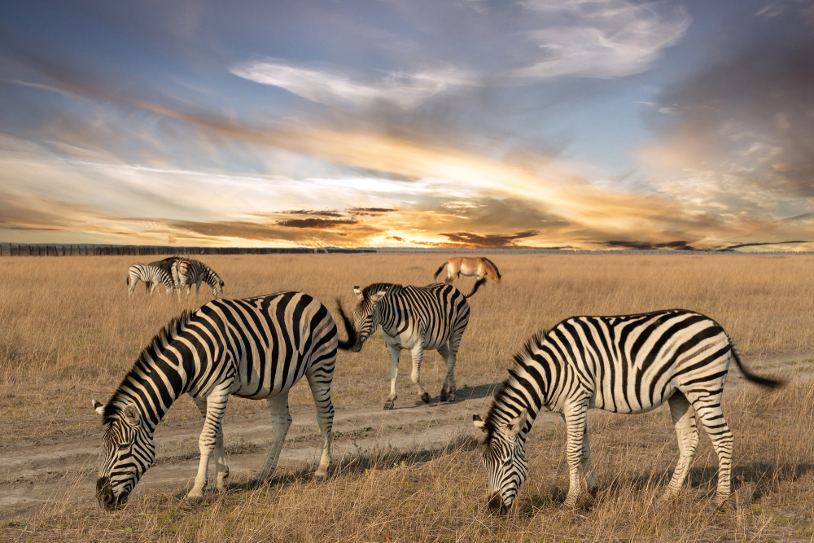

Українські Карпати

Українські Карпати — частина гірської системи Східних Карпат на Заході України на території
Закарпатської, Львівської, Івано-Франківської та Чернівецької областей. Їхня довжина від верхів’їв
річки Сян до витоків річки Сучава становить 280 км, ширина — понад 110 км. Площа гірських масивів
Українських Карпат становить понад 24 тис. км. Українські Карпати багаті мінеральними водами, на
основі яких в багатьох місцях регіону сформувалися бальнеологічні курорти. Навесні та влітку тут
можна не тільки подихати свіжим гірським повітрям, й насолодитися чудовою та різноманітною квітучою
гірською природою. Гори також, безсумнівно, чарівні взимку. Тому, якщо вас не лякають мінусові
температури, то з’являється можливість побачити прекрасні та дуже мальовничі пейзажі.
Крим перлина України
Крим — територія, що має Кримський півострів, деякі невеликі острови, що розташовані поряд з ним, та
Керченський півострів. Півострів є центром літнього відпочинку туристів, омивається на північному
заході та південному сході Чорним, на північному сході Азовським морями. Південне узбережжя Криму
завдовжки близько 180 км має незвичайний для навколишньої території клімат з півночі захищений
Кримськими горами, він розташований субтропічному поясі, саме тому більшість курортних міст саме
тут.
Тут поєднується кілька різних культур кримськотатарська, українська, давньогрецька тощо. Подорожуючи
півостровом можна побачити старовинні базиліки залишки грецьких міст-держав, оборонні споруди генуезьких
колонізаторів, витончені класичні маєтки, палаци романтичного, готичного, модерного, еклектичного
стилів, ханські палаци, мусульманські мечеті та християнські храми.Території півострова мистить такі
видатні місця та історичні пам’ятки, як Храм Сонця, Долина привидів Демерджі, Печерне місто Чуфут-Кале,
Фороська церква, Бухта Кохання, Генуезькі фортеці, Воронцовський палац, Мармурова печера, Ластівчине
гніздо тощо.
Нині Крим тимчасово окупований Росією, але, сподіваємося, ситуація скоро вирішиться, ми знову зможемо
відвідувати наймальовничіший регіон України.
Озеро Синевир

Озеро Синевир є найбільшим, найглибшим високогірним озером України, яке розташоване на висоті 989 м
над рівнем моря. Водойма утворилася внаслідок перекриття гірського потоку кам’янистими породами
після землетрусу 10-11 тисяч років тому. Площа водного плеса становить 4-5 гекторів, його глибина —
8-10 м, найбільша глибина сягає 22 м. Вода в озері — слабомінералізована, чиста, прозора. Тут
водиться три види форелі — озерна, райдужна та струмкова, також гольян та рак річковий. Схили біля
озера вкриті віковими ялинами, привертають увагу своєю величчю.
Посередині розміщений острівець, який нагадує зіницю ока. Тому в народі Синевир називають «Морським
оком». Невеликий півостров озера стоїть 13-метрова дерев’яна композиція «Синь та Вир»: кажуть, тут був
убитий пастух Вир, якого кохала графська донька Синь, — саме її сльози після загибелі коханого стали
озером. Щорічно тут відбувається Всеукраїнський фестиваль «На Синевир трембіти кличуть».
Асканія-Нова

Асканія-Нова державний заповідник в Херсонській області, заснований в 1898 році. Його площа
становить понад 33 тис.гектарів, третина з яких — «абсолютно заповідна». Ботанічний сад на території
Асканія-Нова має колекцію рослин, яка досягла 1000 чагарників та дерев. Краєвиди саду доповнюють
ставок павільйон Грот, де знімали стару кінострічку «Діти капітана Гранта». Заповідник утримує
близько 800 різновидів диких копитних та гібридних форм свиней, оленів, коней Пржевальського,
бізонів, антилоп, баранів, биків, верблюдів, лам, віслюків куланів, шотландських поні. Орнітопарк
заповідника нараховує понад 60 різновидів птахів: лебеді, фазани, качки, лелеки, гуси єгипетські та
індійські, страуси африканські. Крім того, тут водяться такі екзотичні для України птахи, як
південноамериканський нанду та австралійський ему.